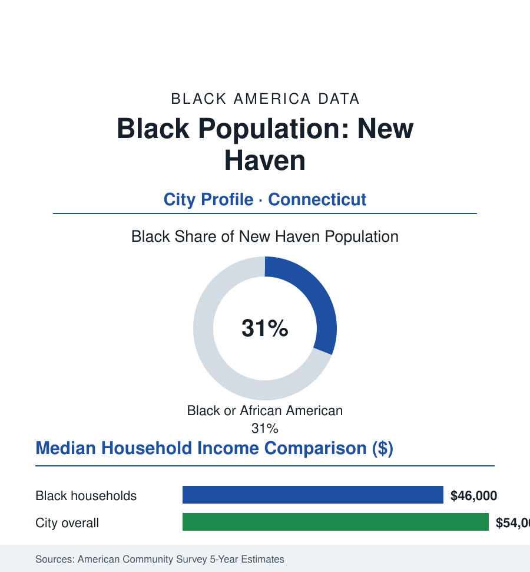

Black Cities
Black New Haven: 42,000 People in the Elm City
New Haven's Black community, about 42,000 strong and 31% of the city, is among Connecticut's largest — rooted in Dixwell Avenue's century of institutions. The census portrait.

New Haven's Black community numbers approximately 42,000 people — about 31% of the Elm City's 134,000 residents — one of the largest Black population shares of any city in New England and the anchor of Black Connecticut alongside Hartford and Bridgeport. Its historic center is Dixwell Avenue, whose churches, funeral homes, social clubs, and the Dixwell Community House built a complete civic world in the shadow of Yale — the university whose relationship to the community frames the city's modern data argument as few town-gown files anywhere. This profile reads the Elm City's numbers.
Winchester, the Railroad, and Dixwell Avenue
Black New Haven's roots reach the colonial port (the Amistad affair's 1841 resolution here — the captives' freedom argued in the city's courts and churches, the Black community's abolitionist institutions already standing), and its growth followed the employers of the industrial corridor: the Winchester Repeating Arms works (the city's Studebaker — thousands of jobs across a century, drawing Southern workers to the Newhallville neighborhoods built around the plant), the New Haven Railroad's yards and shops, the clock and hardware factories, and Yale itself as a service employer from the start. The Dixwell corridor consolidated the institutional result: the Dixwell Community House (1924, among the nation's model Black community centers), the historic congregations along the avenue, the social and civic clubs, and the business row that served a community redlined out of the wider market — the urban-renewal era then cutting both ways through it (the Oak Street clearance and the highway program displacing Black households in the city's documented renewal ledger, the Dixwell renewal projects of the 1960s remaking the avenue itself). Winchester's long decline and 2006 closure closed the industrial chapter; the economy that succeeded it — Yale and Yale New Haven Health as the metro's overwhelming anchors, the biotech spinouts, the public sector — employs the community at every tier from the service floors to the faculty, in the town-gown distribution the city's equity debates audit continuously.
Yale's Shadow and the Community's Institutions
The data of the Yale relationship are the city's most published local statistics: the university's tax-exempt footprint (the payments-in-lieu and the voluntary contributions in the fiscal record), its workforce's racial composition (the service and clerical tiers heavily Black and Latino, the faculty and senior administration the faculty article's percentages), its student body's Black share (in the high single digits of undergraduates in the recent classes), and its New Haven Promise scholarship (the city's signature education intervention — free tuition for city graduates meeting its terms at Connecticut colleges, its outcomes tracked by the program's own reports) — the relationship's every ledger line argued in the same public. The community's own institutions carry equal weight in the profile: the Dixwell corridor's churches and the Community House's second century, the NAACP chapter (among the state's strongest, with a mayor-making record in the city's modern politics — Black mayors and Black council majorities a settled feature of the city's government across recent decades), the public schools (a district about half Black and Latino combined majorities, its magnet schools drawing the region), Southern Connecticut State University and Gateway Community College (the accessible campuses, Southern's Black enrollment among the state's highest at a four-year school), and Albertus Magnus. The cultural record — the Long Wharf and Yale Rep stages' Black seasons, the Stetson branch library as the Dixwell institution of record, the jazz lineage of the city's clubs — is civic infrastructure in the file's sense.
The Economic Ledger
The ACS data place Black New Haven in the section's compressed middle: median household income in the mid forty-thousands against a city median in the mid fifty-thousands (Yale's salaries inflating the top, its students deflating the whole); homeownership in the low-forty percent range on the Newhallville, Dixwell, and Fair Haven stock (the city's triple-deckers and modest single-families, their values rising with the metro's current appreciation wave — the gentrification watch of the east-side neighborhoods in the housing data); poverty elevated, its concentration mapped in the city's own equity atlas. The workforce in the census record: Yale and the health system above all (the region's defining employer at every skill tier), education and the public sector, the biotech and logistics growth at the edges, and the small-business corridors of Dixwell and Grand Avenue in recovery from their renewal-era cuts — the community development corporations' project data tracking the rebuild storefront by storefront.
Reading New Haven's Numbers
Thirty-one percent of the city, an avenue that has carried a civilization for a century, and a university whose endowment could purchase the map it overlooks: New Haven is the town-gown file's purest American case, and its Black community the most institutionally complete in New England. The data argument here is never whether the community exists at scale — it is whether the city's defining institution's next century runs through Dixwell Avenue or around it. The census will record the answer in incomes first.
More in Black Cities
Black Atlanta: Population, Distribution, and Growth of a Black Metropolis
Metro Atlanta holds more than two million Black residents — roughly one in three, second only to New York. The suburban distribution, migration history, and composition of Black Atlanta in the census data.
Black New York: The Largest Black Population in America
The New York metropolitan area holds about 3.4 million Black residents — more than any metro in the nation — and the city itself about two million. The census profile.
Black Washington: The District and the Metro
The Washington metro holds about 1.6 million Black residents, and the District itself — long a majority-Black city — now records a Black share near 41 percent. The census profile.
Source: U.S. Census Bureau, 2020 Census and American Community Survey 5-year estimates; City of New Haven; New Haven Museum and local archives.